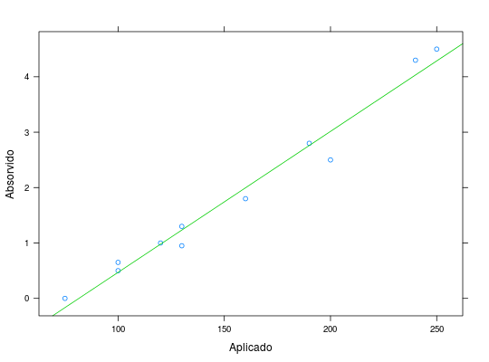

Foi aplicado \(CO_2\) sobre folhas de trigo a uma temperatura de 35\(^\circ\)C. Mediu-se a quantia de \(CO_2\) absorvido pelas folhas.
Um data.frame de 11 linhas e 2 colunas, em que
co2absorvDEMÉTRIO; ZOCCHI (2011), Exercício 1.4.1.3 pág. 14.
data(DemetrioEx1.4.1.3)#> Warning: data set ‘DemetrioEx1.4.1.3’ not foundstr(DemetrioEx1.4.1.3)#> 'data.frame': 11 obs. of 2 variables: #> $ co2 : num 75 100 100 120 130 130 160 190 200 240 ... #> $ absorv: num 0 0.65 0.5 1 0.95 1.3 1.8 2.8 2.5 4.3 ...library(lattice) xyplot(absorv ~ co2, data = DemetrioEx1.4.1.3, xlab = "Aplicado", ylab = "Absorvido", type = c("p", "r"), col.line = 3)